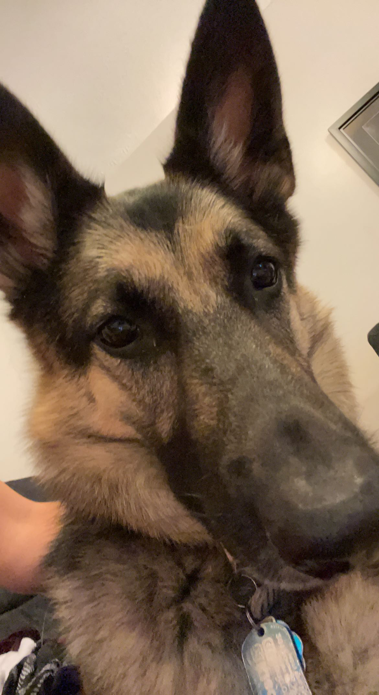
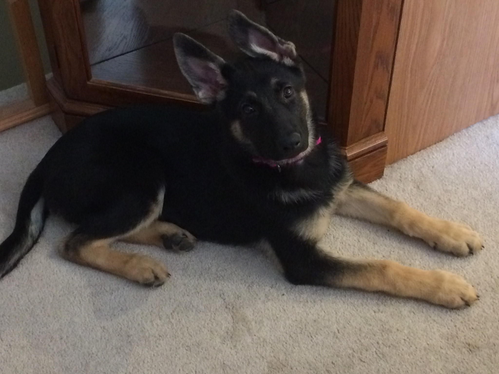
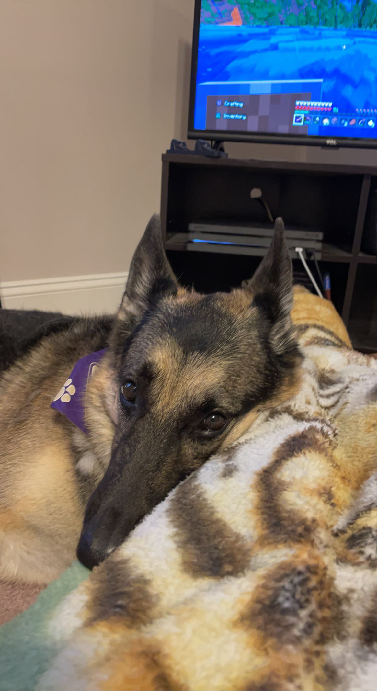
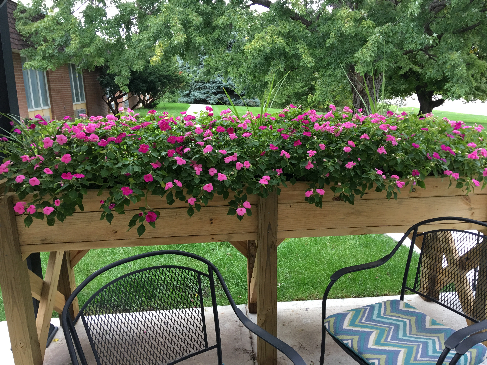
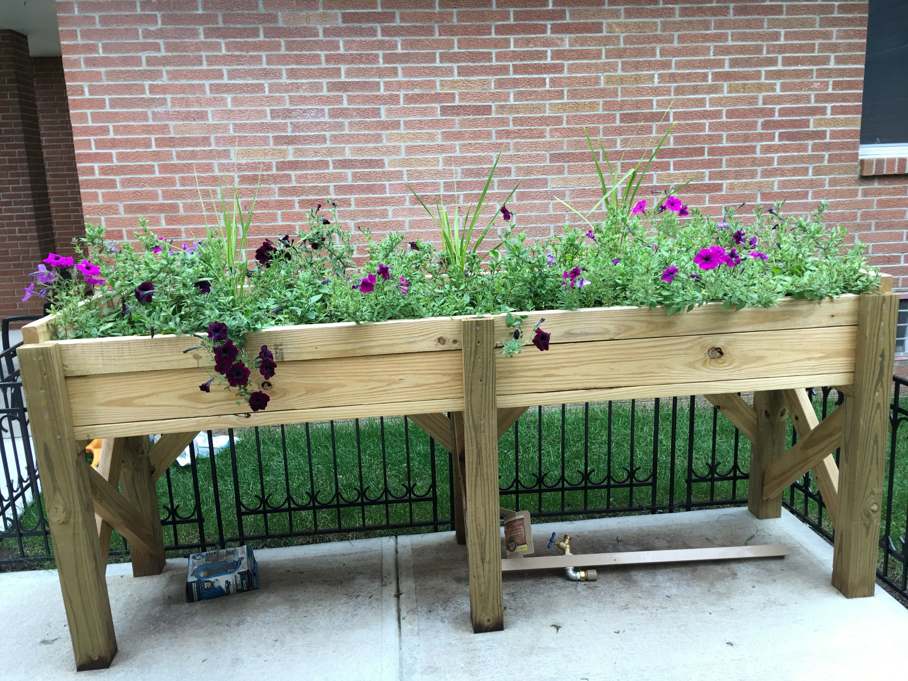
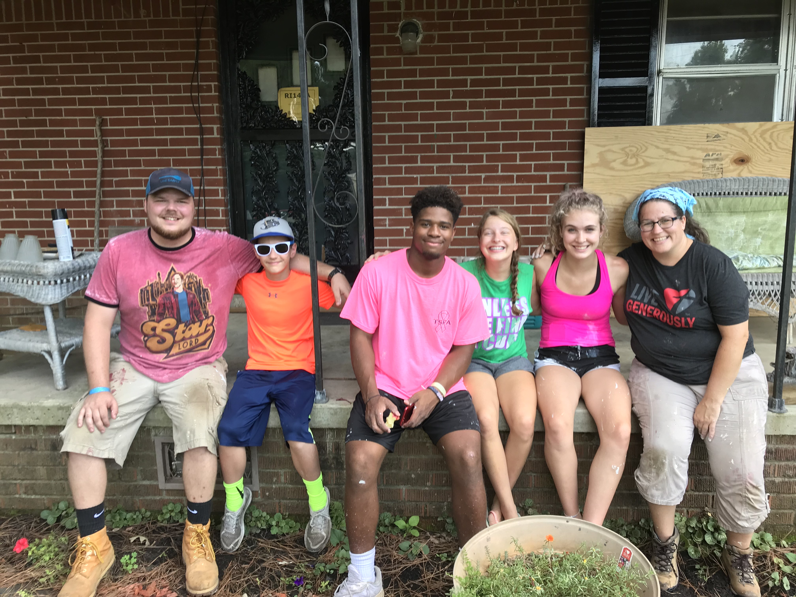
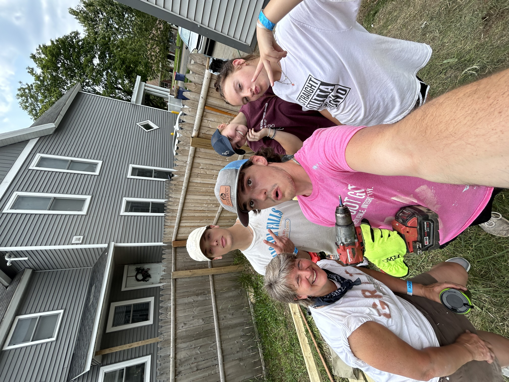
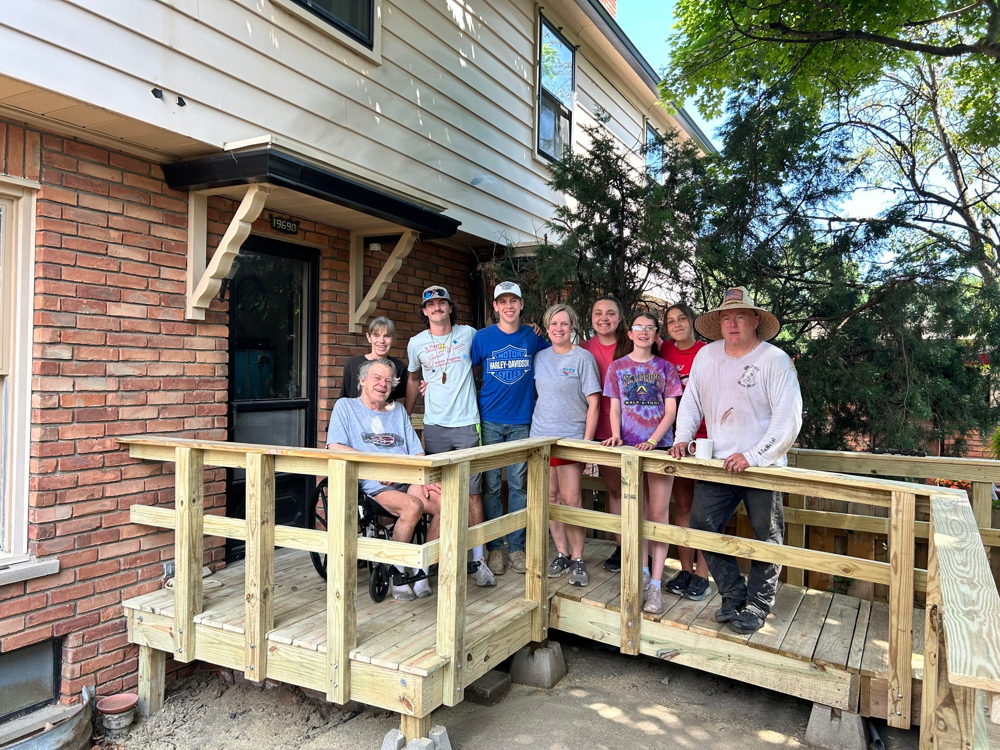

My name is Steve Dormady and I am currently a student at James Madison University studying Computer Science!
Originally hailing from Gretna, Nebraska, I now live in Ford, Virginia since 2020.
In my time as a CS student, I have learned a lot about various programming languages and have become very familiar with windows and linux(former MAC user)!
Dog

This is my dog, Roxy!

She's a German Shepard

She's adorable (and she knows it).
Education
James Madison University, Harrisonburg, VA
Fall 2022 - present
Working towards Bachelor of Science degree in Computer Science
Expected graduation: May 2026
Member of Theta Tau, professional engineering fraternity, club climbing, and Madison Welders (welding club)
Held an executive position in Theta Tau as the New Member Educator for the 2025-2026 school year. I was also a welding instructor for Madison Welders.
Kenston Forest School, Blackstone, VA
Fall 2020 - Spring 2022
Graduated in 2022 with a 3.7 GPA
Earned 30 dual-credit hours towards a bachelor’s degree.
Gretna High School, Gretna, NE
Fall 2018 - Spring 2020
Went to school here from 2018 to 2020, before moving in the Summer of 2020 to Virginia.
Activities and Honors
I played baseball for almost all my life, from a toddler to the end of highschool.
Boy Scouts - Troop 363, Gretna, NE
Eagle Scout (2020)
In my time as a Boy Scout, I did a lot, like:
Held the position of Senior Patrol Leader, head of the troop, and numerous other leadership positions like Patrol Leader, Quartermaster, and Assistant Senior Patrol Leader.
My troop were strong believers in the troop being "boy-led", meaning that the scouts were in charge of the troop and the leaders were there to help and guide us.
Logged hundreds of service hours with various things like trash pickup, maintaining campgrounds, serving local food banks and running food drives, and many more.
Traveled to places like Michigan, Minnesota, Colorado, Iowa, South Dakota, Wisconsin, West Virginia. I went on various high adventures at some of these places.
My first high adventure was traveling to South Dakota and spending a week hiking and camping in the Black Hills. From filtering and purifying stream water to drink, to scrambling and climbing
rocks, and exploring the caves, this was a great experience. We also went on a hike to the top of Harney Peak, the highest point in the Black Hills. This was a great experience, as we got to see
the entire Black Hills from the top. We took a trip to Wind Cave National Park, where we took a candlelit tour through the cave. We traveled deep into the cave, saw famous formations in the cave
that showed some of the history, like previous explorers who got lost in the cave. During the candlelit tour, we extinguished our flames and experienced total darkness, which was a wild experience.
Another high adventure I did was horseback camping in Colorado. The troop learned how to care for, saddle, and ride horses. We rode horses for 3 days and camped in the mountains.
We ate cowboy dinners and cooked them over the fire. Traversing the mountains on a horse was a great and challenging experience, especially if the horses weren't in the mood to cooperate.
My favorite high adventure was in Michigan/Wisconsin, when my troop spent a week on a tall ship manning it and traveling to various Apostle Islands in Lake Superior.
This was only half of the trip, the other half being white water rafting in Michigan, scuba diving a ship wreck in lake Superior, and sea kayaking to some underwater caves.
Placeholder
Organized and completed an Eagle Scout project, building flower boxes for a nursing home in my community.

A picture of one of the flower boxes. These flowerboxes were wheelchair accessible so that the residents could maintain the flowers.

A picture of the other flower box.
Mission Trips
Summer 2017 - present
I have gone on mission trips with my church every summer since 2017. On these trips, we travel around the country to an area in need.
We make a crew with other adults and youth attending the work camp and complete repairs on a house

2017 Mission Trip in Ripley, Tennessee

2023 Mission Trip in Grand Rapids, Michigan

2024 Mission Trip in Detroit, Michigan